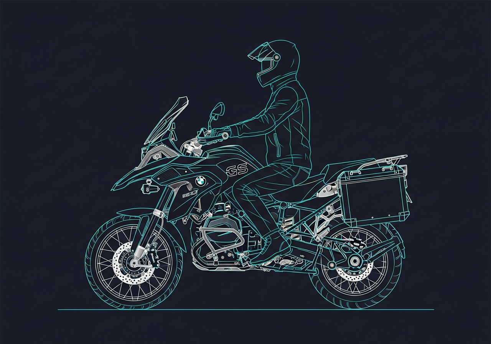
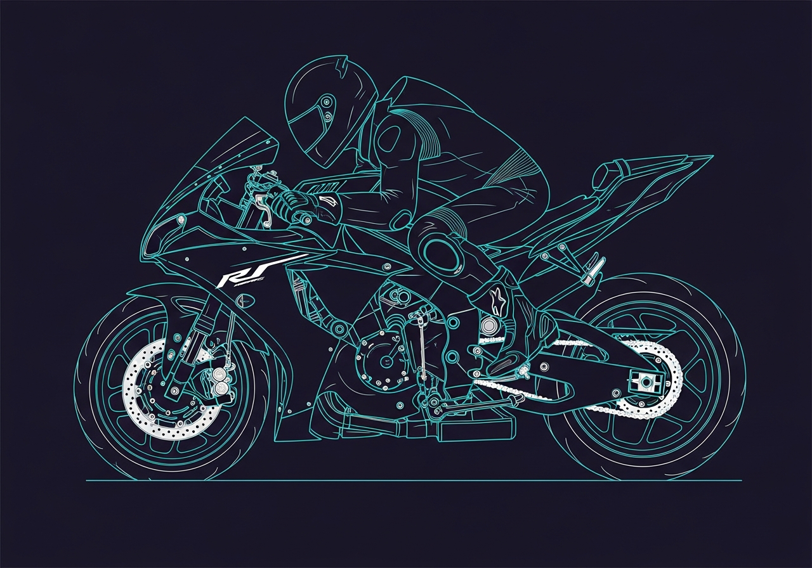
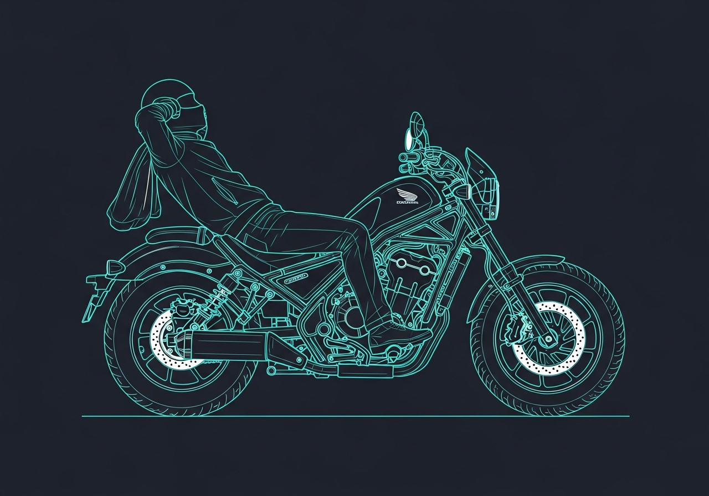
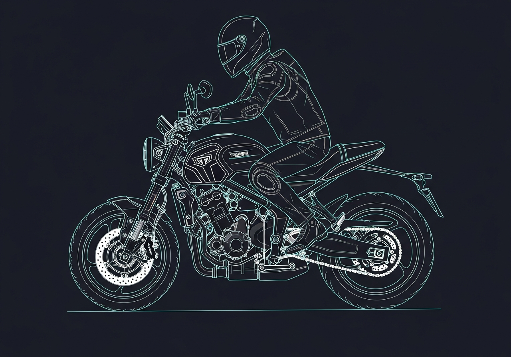

The Rider Triangle
The geometric relationship between your hands, hips, and feet on a motorcycle determines how comfortable, in control, or fatigued you'll be after an hour in the saddle.
The Rider Triangle is formed by three contact points where your body meets the bike:
- The Handlebars — where your hands grip
- The Seat — where your hips sit
- The Footpegs — where your feet rest
The shape of this triangle changes everything. It determines the "personality" of the bike and dictates which categories suit which riders.

The Three Triangle Shapes
1. The Upright Triangle (Neutral)
Your back is straight, arms have a natural relaxed bend, and your feet are directly underneath your hips. This is the most ergonomic position for long-distance travel — it keeps weight off your wrists and prevents your lower back from rounding.
Categories: Adventure (ADV), Standard, Naked bikes.
Best for: Long rides, mixed terrain, standing on the pegs for rough roads.
2. The Tucked Triangle (Acute)
The handlebars are lower than the seat (clip-ons), and the footpegs are high and set toward the rear. You're essentially folded over the tank. This makes you aerodynamic and lowers your center of gravity for cornering.
Categories: Sport, Supersport bikes.
The trade-off: Significant pressure on your wrists. Requires strong core engagement to avoid back pain. Most riders need a break after 45-60 minutes.
3. The Relaxed Triangle (Obtuse)
The handlebars are high and the footpegs are pushed forward. Your hips are lower than your knees — like sitting in an armchair. It feels relaxed and natural at first.
Categories: Cruisers, Choppers.
The trade-off: Because your feet are forward, you can't use your legs to absorb bumps. Your spine takes the full impact of every pothole.
Real Bikes, Real Triangles
The Upright Triangle: BMW R 1300 GS

The gold standard for the Adventure category. Very neutral triangle — bars are high, pegs directly under you. You can stand up instantly for rough roads.
| FITS Axis | Score |
|---|---|
| Terrain | Go-anywhere (pavement or dirt) |
| Span | Built for 10-hour days without back pain |
| Frequency | Often used as a year-round do-it-all machine |
The Tucked Triangle: Yamaha YZF-R1

A classic Supersport built for the track. Aggressive, tight triangle — seat is high, bars are low, feet pushed back. You're folded over the tank.
| FITS Axis | Score |
|---|---|
| Intensity | Designed for extreme speed and lean angles |
| Span | 45-60 minutes before wrists or neck need a break |
| Frequency | Weekend joy machine; tough to use for a grocery run |
The Relaxed Triangle: Honda Rebel 1100

A modern Cruiser. Low seat with feet slightly forward. You sit "in" the bike rather than "on" it. Arms reach out comfortably, like sitting in an armchair.
| FITS Axis | Score |
|---|---|
| Terrain | Best on smooth boulevards or coastal roads |
| Intensity | Focused on the thump of the engine and relaxed cruising |
| Frequency | Great for daily commuting — easy to flat-foot at red lights |
The Balanced Triangle: Triumph Trident 660

A Naked/Standard bike. Middle ground — bars are lower than an ADV but higher than a Sport. Slightly sporty but still comfortable enough for a commute.
| FITS Axis | Score |
|---|---|
| Terrain | Urban environments and weekend twisties |
| Span | Perfect for 1-3 hour rides |
| Frequency | Very high — lightweight, easy to park, simple to maintain |
Summary
| Bike | Category | Triangle | Best For |
|---|---|---|---|
| BMW R 1300 GS | Adventure | Upright | Long haul & mixed roads |
| Yamaha R1 | Supersport | Tucked | High-speed performance |
| Honda Rebel | Cruiser | Relaxed | Low-speed style & comfort |
| Triumph Trident | Naked | Neutral-Sport | Daily fun & versatility |
How It Connects to FITS
The Rider Triangle is the physical reality behind the Span and Terrain axes of the FITS framework:
- For technical terrain: You want an Upright triangle so you can stand on the pegs easily.
- For long spans: You want a triangle that doesn't force your joints into extreme angles.
Pro Tip: There's a tool called Cycle-ergo where you can input your height and inseam to see exactly how your Rider Triangle will look on almost any motorcycle model — before you even sit on it.
Read more: The Three T's | F.I.T.S. | Try the FITS Tool